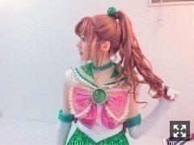
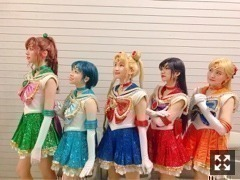
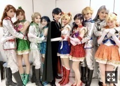
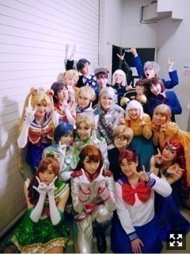

セーラージュピター！
みなさまこんにちは！！
乃木坂46の
梅澤美波です！！
今日はセラミュのお話を☺︎
乃木坂46版 ミュージカル「美少女戦士セーラームーン」
大千秋楽を終えました！
５月から稽古が始まり
約４ヶ月間、
本当にあっという間でした！
６月公演を経ての９月公演は
七ステを挟んでいたので
作品と改めて向き合い
台本を改めて読み返した時、
６月公演のときとは違う感じ方をする部分もありました
それくらい七ステで学んだことが
大きかった気がします☺︎
以前より伸び伸びしていられた気がする！
色々な想いが、メッセージが、
強く込められたこの作品。
小さい頃はビジュアルが好きで
憧れのその姿を真似ていたけど
今こうしてまたこの作品と向き合い
改めて色々なことを教えられたなあと。☺︎
舞台上で
木野まこと、セーラージュピターとして
生きてみんなと出逢いながらも
梅澤美波としてこのカンパニーに出逢えたことの幸せを感じる期間でもありました。
本当に最高に楽しい時間でした！
みんなが本当に大好き！
人見知りで壁を作りがちな私だったけど、、
大好きな人達と
大好きな作品の中で生きられることが
本当に幸せだった☺︎
もっとお話したかったなあなんて( .. )
今思っても遅いですが。
始まった頃はどうなる事かと思ったけど
今はみんなで笑えてる☺︎
楽しかった、終わりたくない、寂しい、
こう思えてることが全てだと思います☺︎
物心ついて初めて
自分の意思で好きになったこの作品。
幼い私に夢をくれたこの作品に
こうして今携われていること、
奇跡のようなことだと思います。
ああ、書きながら泣きそうなんですけど
本当に人生何があるかわからない！
戦士として生きる日々が未来にあることを幼き日の私が知ったらどう思うのだろう
言葉で表せられないけど
とにかく私はセーラームーンが大好きです！
この作品を生んでくださった
武内直子先生、
感謝とともに、わたしはずっとセーラームーンが大好きです！

ありがとうまこちゃん！
姉御肌でかっこよくて
割と単純な一面があって
誰よりも恋に敏感で
見た目や印象と裏腹にとても家庭的で。
身長が高くてそれをコンプレックスに思う部分なんて私と同じで☺︎
本当に素敵で魅力的な子だから
それを伝える人としてあれたかなあ
そしてTeamSTAR！

この人達がいなかったら
どうなっていたんだろう( .. )
４人とはセラミュ始まるまで
ほとんど話したことがない
状態からのスタートだったけど
ここまで仲良くなれるなんて
思ってもみなかった(；；)
始まる前のメイクアップの円陣の動画も
日々楽屋でふざけてた動画も
今見返すと全部が愛おしい(；；)
４人がいたから毎日笑っていられたし
色々葛藤があった時期も
初めての通し稽古で失敗して落ち込んだ時も
どんなときも側で支えてくれて
みんなで苦しみを分かち合ってきて
セラミュは終わったけど
Team STARは永遠に大好きだし、
きっと変わらない関係☺︎☺︎
DVD出たら鑑賞会するんだー！

素敵な写真、、☺︎
ネフまこの背が高いから
ゾイ亜美が小さく見えるの
本当にかわいい。（笑）
また、みんなで
セーラームーンの世界を生きられるんじゃないかって
そんなことを考えてしまう。
また出逢えますように！

たくさんの応援、
本当にありがとうございました！
そしてここからは
１１月の舞台「ザンビ」に向けて
頑張ります！！
それでは今日はここまで！
おやすみなさい☺︎
Original：https://www.nogizaka46.com/s/n46/diary/detail/47302?ima=4949&cd=MEMBER